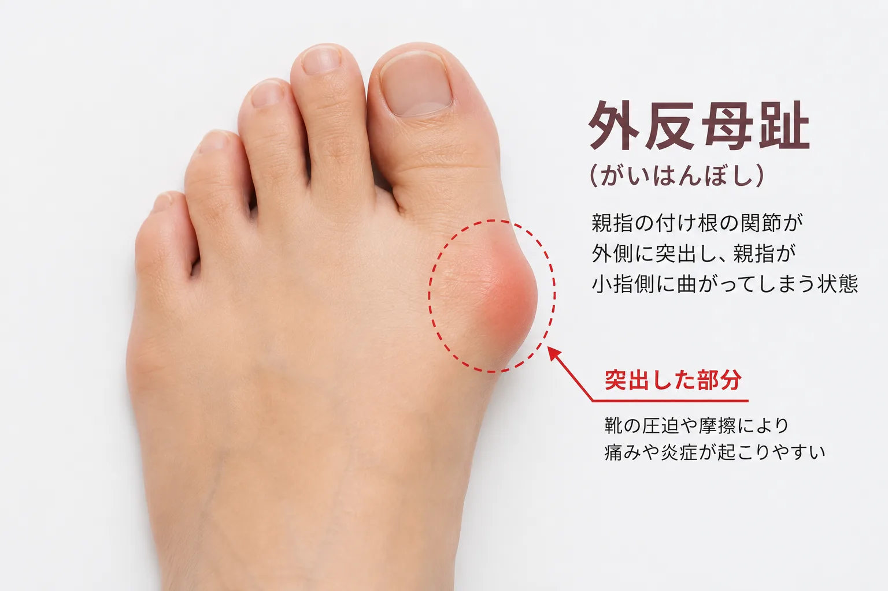

曲がった指だけを見ないのは、私自身が痛みを経験したからです。
外反母趾やモートン病で、歩くことがつらかった時期があります。だから相談では、変形の名前をつけて終わらせません。どこが当たるのか、靴の中で足がどう動くのか、立って歩くと何が起きるのか。その方の困りごとから一緒に見ます。

外反母趾は、足の親指が第2趾の方向へ傾き、親指の付け根の内側が張り出す状態です。張り出した部分が靴に当たると、赤みや痛みが出ることがあります。足の骨格や動き方などの素因に、先の細い靴や足に合わない靴による圧迫が重なる場合があります。
店頭では曲がり方だけでなく、親指の付け根がどこに当たるか、足が前へ滑っていないか、踵が収まるか、歩くときに指が使えているかを見ます。「幅広なら楽」と大きすぎる靴を選ぶと、靴の中で足が動き、別の場所に負担がかかることがあるからです。

内反小趾は、小指が内側へ傾き、小指の付け根の外側が張り出す状態です。英語では bunionette や tailor’s bunion と呼ばれます。張り出しと靴がこすれて、圧迫感、赤み、胼胝（たこ）が生じることがあります。
小指側だけを広げれば解決するとは限りません。足長・足幅・足囲、踵の収まり、靴の屈曲位置を見ながら、足全体と靴の関係を確認します。

内側縦アーチは、踵から親指側へ続く、一般に「土踏まず」と呼ばれる部分です。外側縦アーチは、踵から小指側へ続く、比較的低い縦方向の支えです。横アーチは、足の内側と外側を横につなぐ支えで、前足部にも関係します。
3つは独立した部品ではありません。立つ、体重を受ける、前へ進む、蹴り出すという動きの中で連携します。土踏まずの高さだけ、フットプリントの形だけで良し悪しを決めず、体重をかけた足、指、踵、歩行、靴の減り方を合わせて見ます。
- 裸足と靴を履いたときで、痛む場所や歩き方が変わるか
- 親指・小指の付け根、甲、踵に赤みや当たりがないか
- 靴の踵がつぶれたり、靴底が大きく片減りしたりしていないか
- 紐やベルトを留めても、足が靴の中で前へ滑らないか
- 足長だけでなく、足幅・足囲と左右差を測り直しているか
現在の靴は処分せず、ご相談時にお持ちください。足と靴の間で何が起きているかを見る大切な資料になります。
足の計測、フットプリント、靴と歩行の観察を行い、用途やお悩みに合わせた靴・インソールを提案します。診断や治療ではありません。
膝の痛みは年齢のせいと片づけられがちですが、足と靴の影響を受けているケースは少なくありません。まず、ご自身で確認できる5つのポイントをご紹介します。
- 靴底が片減りしていませんか？減り方は歩き方のクセを表します。ひどい片減りは修理するか靴を替え、歩き方のバランスを見直しましょう。
- 靴紐をきちんと締めていますか？締めずに履くと足元が不安定になり、膝への負担が増えます。踵を合わせ、つま先から順にしっかり締めます。
- 土踏まずが潰れていませんか？アーチが低下すると衝撃を吸収できず、膝に負担がかかります。柔らかすぎる靴を避け、踵まわりのしっかりした靴を選びましょう。
- 脱いだ靴の形が歪んでいませんか？靴の歪みは、足のバランスの崩れを表すことがあります。正しい履き方に加え、インソールで整えるのも一つの方法です。
- 外反母趾、ウオノメ・タコ、巻き爪などはありませんか？足のトラブルは歩き方に影響します。皮膚や爪のケアが必要なものは医療機関やフットケアへ。靴は足のサイズを測り、合ったものを選びます。
歩くことは健康につながり、歩かないことは足の血流やむくみにも影響します。膝が痛み出したら、早めに上の5点を見直してください。2本のポールで身体を支えるノルディックウォーキングやポールウォーキングも、歩きやすさを助けてくれます。
おうちで確認できるよう、この5点と子ども靴・履き方のチェック項目をまとめたPDFをご用意しています。足と靴のセルフチェックリストをダウンロード（PDF）
痛みが続く、急に腫れた、熱をもつ、歩けない、しびれや傷がある、変形が進んでいると感じる場合は、整形外科などの医療機関へご相談ください。糖尿病や血流の問題がある方は、自己判断でパッドやインソールを使う前に医療専門職へご確認ください。
靴が当たる、歩くと疲れる。まずはご相談ください。
通常の足と靴のご相談は、わたしが予約制で承ります。